항목과 요율, 세액표를 회사가 넣고 달마다 대장을 만듭니다. 확정하면 값이 고정되고, 이체 파일을 내려받아 사람이 은행에서 이체한 뒤 지급 완료를 기록합니다. 회계를 나중에 켜도 같은 전표가 만들어지고, 원천세 집계는 옮겨 적을 값으로 내보냅니다.
무엇을 · 왜#
급여 모듈은 인사가 있어야 켜집니다. 개인별 금액과 계좌는 원장에 넣지 않습니다. 원장은 지울 수 없기 때문입니다. 원장 밖의 표에 저장하고 접근 권한을 나누며, 이벤트에는 회사 합계와 집계에 필요한 값만 싣습니다.
| 앱이 하는 일 | 앱이 하지 않는 일 |
|---|---|
| 요율과 간이세액표로 대장 계산, 고친 칸 표시 | 요율과 세액표 제공(회사가 출처와 함께 넣습니다) |
| 이체 파일 내려받기, 지급 완료 기록 | 돈 옮기기 |
| 원천세 집계, 옮겨 적을 값 내보내기, 마감 | 전자신고 파일, 전송, 연말정산 |
| 월 중 입사·퇴사 표시 | 일할 계산(금액은 사람이 고칩니다) |
전문가 검수 전입니다
급여 화면은 근거를 문서에 적어 두었지만 세무·노무 전문가의 검수를 받지 않았습니다. 화면에도 그렇게 표시합니다. 세액과 공제를 확인하고 신고할 책임은 회사에 있습니다. 이 장에 넣은 요율과 세액표 값은 시연용이니, 실제로 쓸 때는 회사가 출처를 확인해 넣으세요.
먼저 알아 둘 것
- 가온가전은 가상 회사이고, 사람, 금액, 계좌번호는 모두 가상입니다. 화면은 로컬 Supabase에서 찍었습니다.
- 녹화 전에 인사와 청구 모듈을 켜고, 구성원 한인사(인사, 급여), 박영업, 오수도, 부서
영업, 직원 3명을 명령으로 넣었습니다. 오수도와 신입사의 급여 정보는 화면 밖에서 입력했습니다. - 대장의 금액은 시험 코드에 넣은 손 계산 결과와 같습니다.
따라 하기#
- 급여 켜기. 관리자로 설정 → 모듈에서 급여의 켜기를 누릅니다. 요율과 세액표는 제품에 들어 있지 않으므로 회사가 출처와 함께 넣는다고 알려 줍니다.
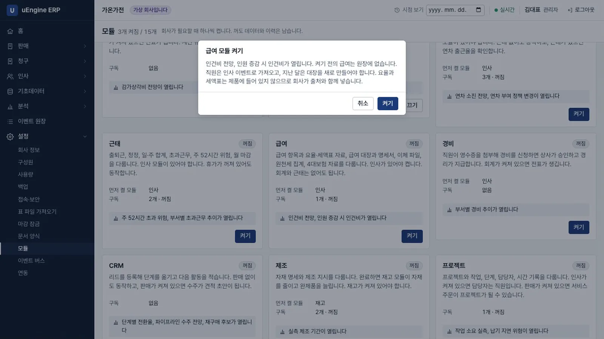
급여 켜기 - 지급 항목. 한인사로 로그인해 급여 → 급여 항목에서
기본급을 만듭니다.식대는 과세를 끄고 비과세 월 한도200000을 적습니다.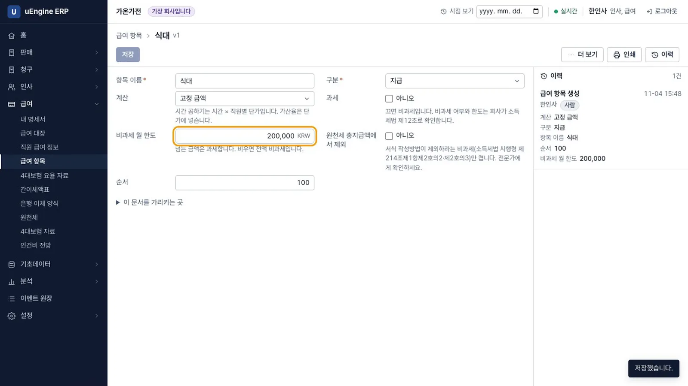
급여 항목 - 요율 자료. 급여 → 4대보험 요율 자료 → 새로 만들기를 엽니다. 기본값이 없어 칸이 비어 있습니다. 자료 이름, 시작일, 출처, 확인한 날과 요율을 적습니다.
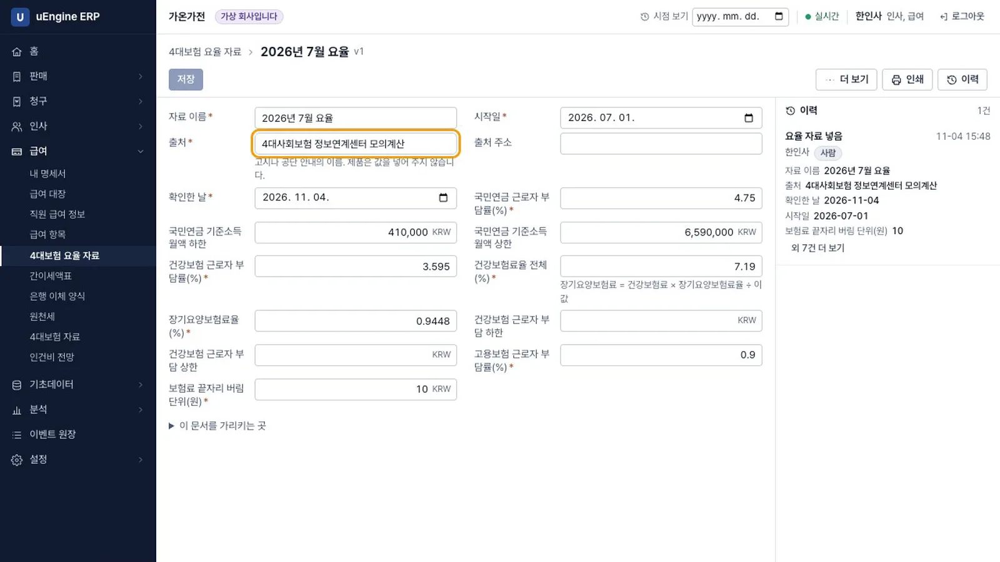
요율 자료 - 간이세액표. 급여 → 간이세액표에서 자료 이름, 시작일, 출처, 확인한 날을 적고 파일을 올립니다. 읽은 줄 수가 나옵니다. 녹화에서는 646줄입니다.
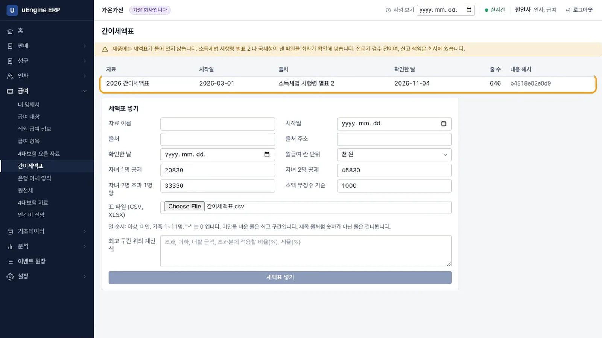
간이세액표 - 직원 급여 정보. 급여 → 직원 급여 정보에서 박영업의 고치기를 누르고 은행, 계좌번호, 기본급
3000000, 식대200000을 넣습니다. 목록에는 계좌가있음으로만 나옵니다. 주민등록번호는 받지 않습니다.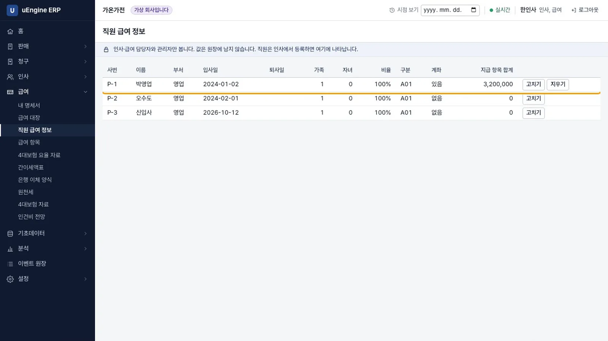
직원 급여 정보 - 대장 만들기. 급여 → 급여 대장 → 새로 만들기에서 귀속월
2026-10, 지급일2026-10-25를 넣고 저장합니다. 박영업은 지급 3,200,000, 공제 373,300, 차인지급 2,826,700입니다. 오수도는 지급 2,005,000, 공제 194,810, 차인지급 1,810,190입니다.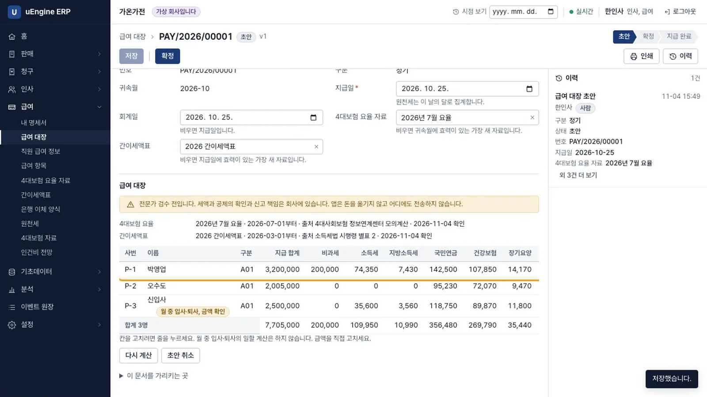
대장 - 계산 근거. 대장 위에 계산에 쓴 요율과 세액표가 표시되고
전문가 검수 전입니다가 나옵니다.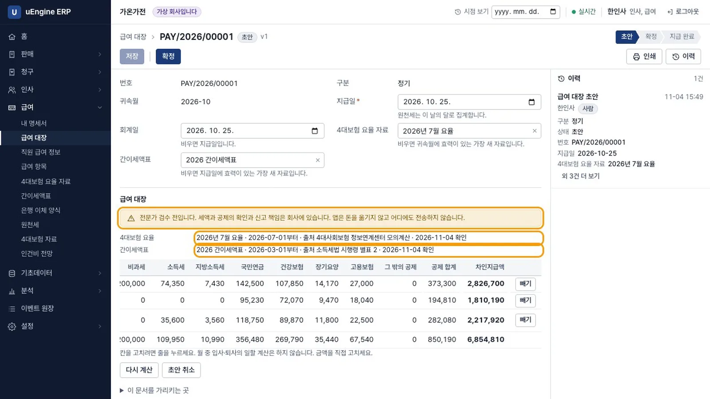
계산 근거 - 월 중 입사. 10월 12일에 들어온 신입사에게는
월 중 입사·퇴사, 금액 확인이 붙습니다. 일할 계산은 하지 않으므로 사람이 금액을 고칩니다. 이 장에서는 빼기를 눌러 제외합니다. 합계는 2명, 차인지급 4,636,890이 됩니다.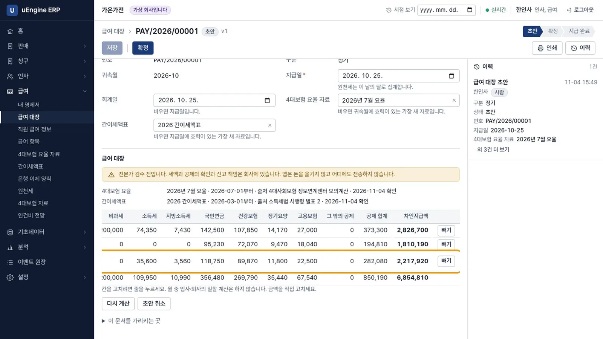
월 중 입사 - 사람이 고치기. 오수도 줄을 눌러 고용보험을
18000으로 고치면 그 칸에 표시가 남습니다. 칸을 비우면 다시 계산한 18,040으로 돌아옵니다.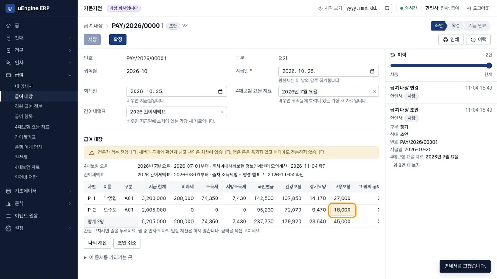
고친 칸 - 확정. 확정을 누르면 명세서가 발행되고 값을 고칠 수 없습니다.
요율이 바뀌어도 움직이지 않습니다라고 적혀 있습니다.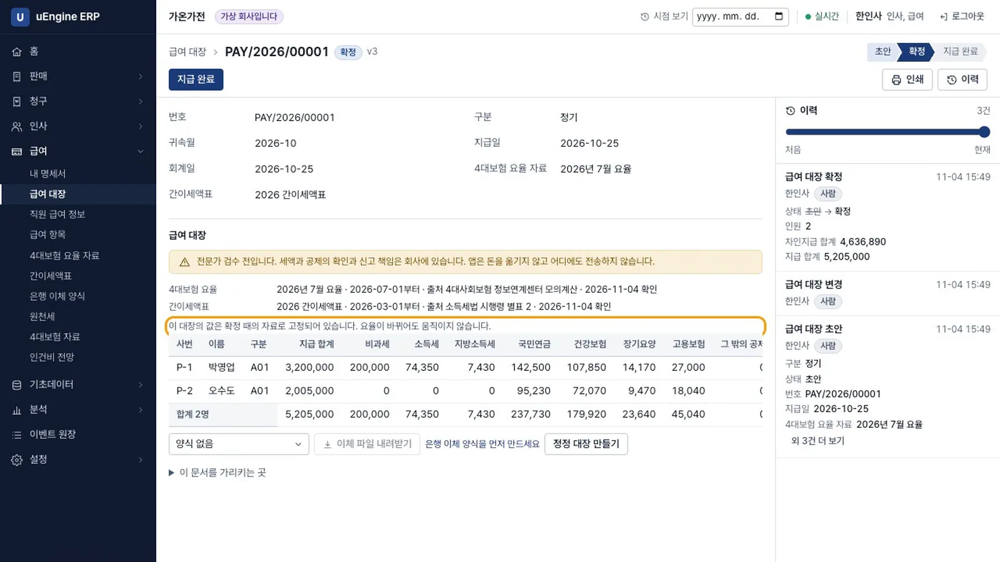
확정 - 이체 양식. 급여 → 은행 이체 양식에서
가온은행 대량이체를 만들고 입금은행, 계좌번호, 금액, 받는 분 순서로 열을 정합니다.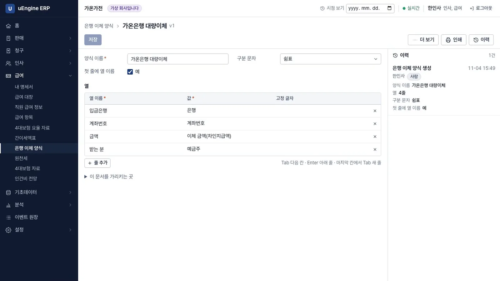
이체 양식 - 이체 파일. 대장으로 돌아와 양식을 고르고 이체 파일 내려받기를 누릅니다. 내려받기 전에 오수도의 계좌가 없다는 안내가 나옵니다. 파일의 머리글은
입금은행,계좌번호,금액,받는 분입니다.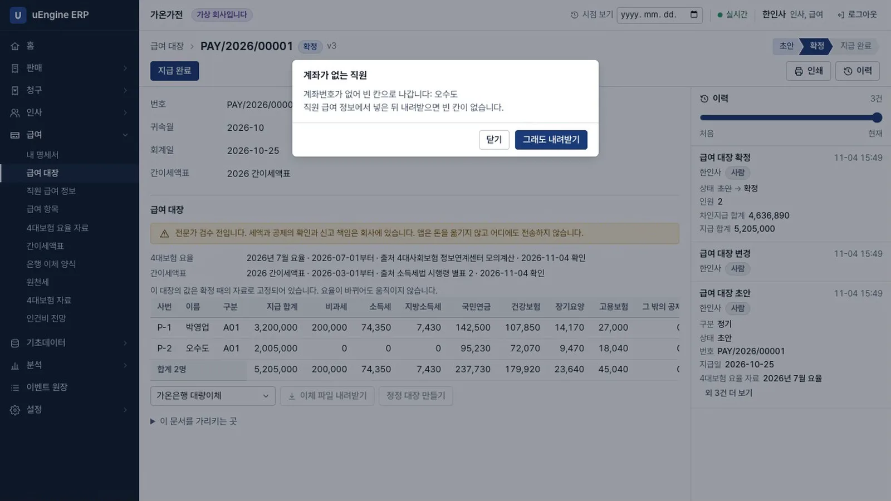
이체 파일 - 지급 완료. 사람이 은행에서 이체한 뒤 지급 완료를 누르고 날짜를 넣습니다.
앱은 돈을 옮기지 않습니다라고 적혀 있습니다.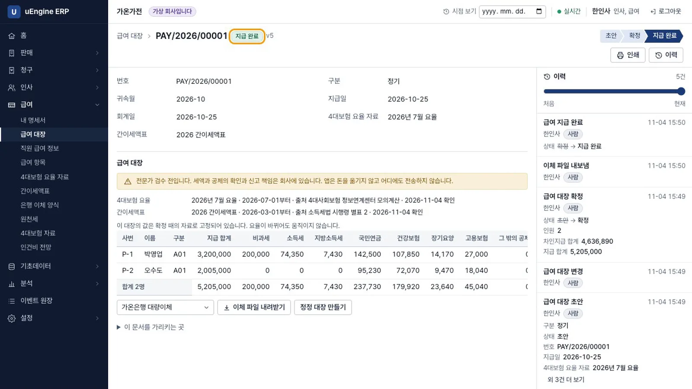
지급 완료 - 전표. 관리자로 회계를 켜고 회계 → 시산표를 엽니다. 나중에 켜도 지난 대장으로 전표가 만들어집니다. 급여 5,205,000, 예수금 -568,110, 보통예금 -4,636,890입니다.
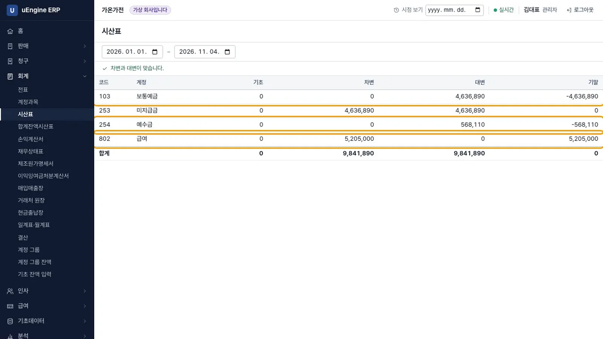
시산표 - 원천세. 한인사로 급여 → 원천세에서
2026-10을 고릅니다. 간이세액 2명, 총지급액 5,205,000, 소득세 74,350, 지방소득세 7,430입니다. 줄을 누르면 대장이 나옵니다. 옮겨 적을 값 내보내기로 내려받고 이 달 마감을 누르면마감 1회차가 됩니다. 앱은 어디에도 전송하지 않습니다.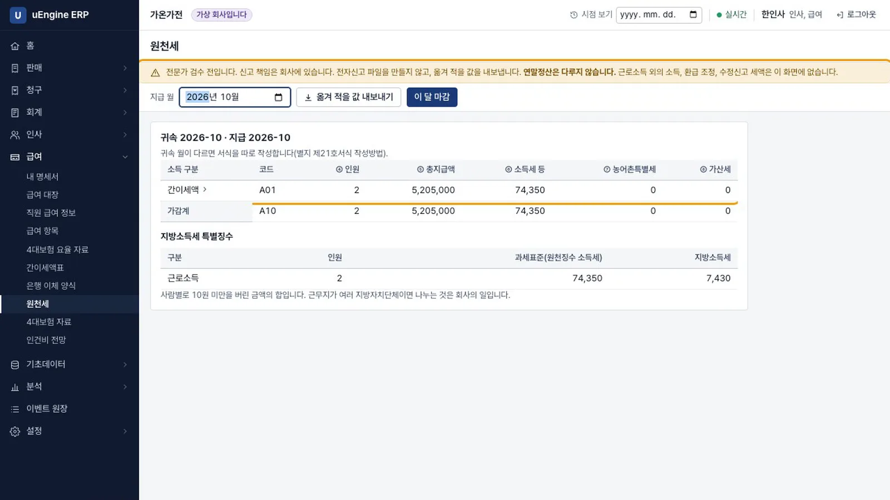
원천세 - 내 명세서. 박영업으로 급여 → 내 명세서를 엽니다. 자기 명세서만 보이고 대장 메뉴와 다른 사람의 금액은 보이지 않습니다.
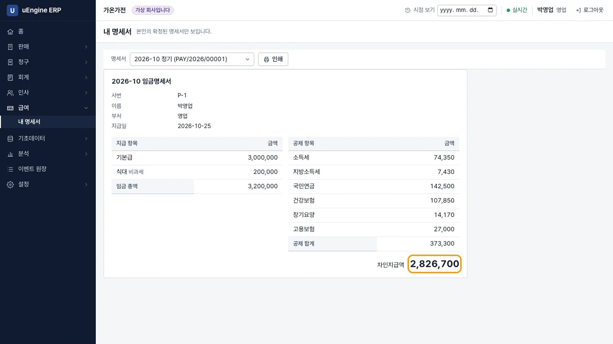
내 명세서
녹화에서 계좌번호로 원장을 검색해 값이 없는 것을 확인했습니다.
확인 문제#
요율이 바뀌면 지난 대장의 금액도 바뀌나요?
바뀌지 않습니다. 확정한 대장은 그때의 자료로 고정됩니다. 틀린 대장은 고치지 않고 정정 대장으로 바로잡습니다.
지급 완료를 누르면 돈이 나가나요?
아닙니다. 앱은 돈을 옮기지 않습니다. 사람이 은행에서 이체한 뒤 그 사실을 기록하는 단추입니다.
직원은 어디까지 볼 수 있나요?
자기 명세서만 봅니다. 대장 메뉴와 다른 사람의 금액은 보이지 않습니다.